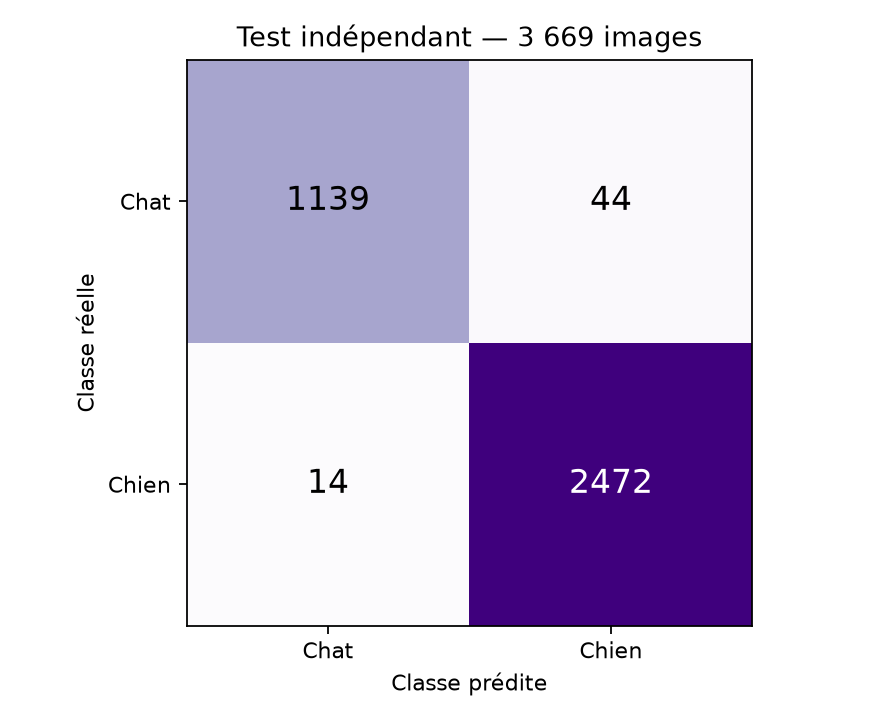
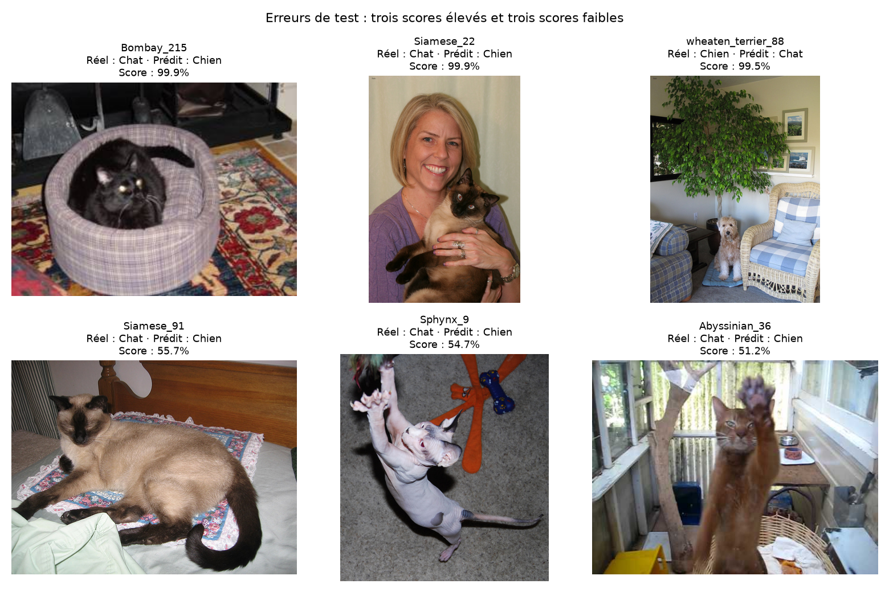

IAnimaux — Rapport finalIAnimaux
Université du Québec en Outaouais
Département d’informatique et d’ingénierie
INF1853 – Introduction à l’intelligence artificielle
Automne 2026
Système intelligent de classification automatique de photos de chats et de chiens
Rapport du mini-projet
Coauteures
Megan Daoust
Luzia Coelho Bento Muaquesse
Enseignant
Jean Jarcke Mukombelwa Malasi
Remise : 8 décembre 2026
Présentation : 9 décembre 2026
Version rédigée le 21 novembre 2026
Numéro de groupe : à compléter
1. Définition de la tâche
Repères de lecture
1. Définition de la tâche — p. 2
2. Brève revue de la littérature — p. 3
3. Matériel et méthodes — p. 4 à 6
4. Résultats et discussion — p. 7 et 8
5. Conclusion et contributions — p. 9
Références bibliographiques — p. 10
1.1 Problème et objectifs
Dans le contexte envisagé d’un refuge animalier, classer manuellement un lot de photographies de chats et de chiens constitue une tâche répétitive. IAnimaux propose d’assister ce classement avec une application accessible dans un navigateur. Il s’agit d’un prototype évalué sur un jeu public ; aucune étude de terrain dans un refuge ni économie de temps mesurée n’est revendiquée.
L’objectif principal est de prédire l’espèce de l’animal dominant, puis de permettre le téléchargement des photographies réparties dans deux dossiers. Le projet vise aussi à rendre observable une démarche d’apprentissage supervisé : préparation des données, entraînement, validation, évaluation indépendante et interprétation des erreurs.
1.2 Entrées, sorties et périmètre
L’entrée est un lot de fichiers JPG, PNG ou WebP, avec une limite de 20 Mo par photo. Chaque image devrait contenir principalement un chat ou un chien. La sortie comprend une catégorie Chat ou Chien, un score softmax, un aperçu, des compteurs et une archive ZIP contenant chat/ et chien/. Les originaux sont préservés. Les fichiers invalides sont signalés et exclus du ZIP.
L’utilisatrice peut corriger la catégorie retenue pour le lot courant. Cette annotation peut préparer un futur réentraînement, mais ne modifie pas instantanément les poids du réseau. La reconnaissance des races, explorée puis retirée, ne fait pas partie du prototype livré. Le système ne détecte ni plusieurs animaux séparément ni une classe « autre ».
1.3 Pertinence de l’IA
Les chats et les chiens présentent des variations de couleur, de pose, de taille et de contexte qui rendent des règles manuelles fragiles. Un réseau convolutif apprend des représentations visuelles à partir d’exemples étiquetés. L’apprentissage par transfert permet de réutiliser un extracteur préentraîné plutôt que d’entraîner tout le réseau depuis zéro.
2. Brève revue de la littérature
2.1 Classification d’images d’animaux
Parkhi et al. [1] introduisent Oxford-IIIT Pet, qui contient 37 catégories de races et des annotations d’espèce. La publication distingue notamment la classification chat/chien et la classification fine des races. Cette distinction permet de retenir ici une tâche binaire adaptée au temps disponible. Les annotations d’espèce sont utilisées ; les masques et boîtes de tête ne sont pas exploités.
2.2 Réseaux convolutifs compacts
Howard et al. [2] présentent MobileNetV3, une famille de réseaux conçue en tenant compte de contraintes de calcul sur des processeurs mobiles. L’architecture combine notamment des convolutions efficaces et une recherche d’architecture adaptée au matériel. La variante Small constitue donc un choix plausible pour un prototype exécuté sur CPU. Cette motivation ne prouve pas qu’elle est optimale pour notre application.
2.3 Apprentissage par transfert
La documentation PyTorch [3] distingue l’ajustement d’un réseau et l’utilisation d’un extracteur gelé avec une nouvelle tête de classification. La deuxième stratégie réduit les paramètres à optimiser. Dans IAnimaux, les couches convolutives préentraînées sur ImageNet sont conservées et le bloc classificateur est adapté à deux sorties. Les poids IMAGENET1K_V1 et leur prétraitement sont fournis par Torchvision [4].
2.4 Choix retenu et alternatives
| Approche | Intérêt | Limite dans ce projet |
| Règles sur couleurs ou formes | Faciles à expliciter | Fragiles aux variations visuelles |
| Descripteurs manuels + classificateur | Pipeline classique possible | Choix des descripteurs à concevoir |
| CNN entraîné depuis zéro | Apprentissage de la tâche entière | Davantage de données et de calcul |
| CNN préentraîné, extracteur gelé | Réutilisation des caractéristiques | Dépendance au préentraînement |
MobileNetV3 Small avec extracteur gelé est retenu pour limiter le coût de développement et rendre l’entraînement observable. Les autres approches ne sont pas implémentées : le tableau est une comparaison conceptuelle. La seule référence quantitative utilisée est la prédiction systématique de la classe majoritaire. Aucun classement de performances entre architectures n’est affirmé.
3. Matériel et méthodes
3.1 Environnement et architecture logicielle
Le prototype utilise Python 3.11.18, PyTorch 2.15.0 et Torchvision 0.29.2 pour les tenseurs, le modèle et les transformations. Pillow assure la lecture des images ; pandas gère les annotations ; scikit-learn calcule les mesures ; Matplotlib produit les figures. Streamlit fournit l’interface, déployée sur Streamlit Community Cloud. Les dépendances sont documentées dans le dépôt.
Le code sépare les responsabilités : app.py orchestre l’interface ; ianimaux/datasets.py prépare les lots ; model.py construit et recharge le réseau ; predict.py analyse les imports ; feedback.py conserve les annotations ; export.py génère le ZIP. Les scripts de préparation, d’entraînement et d’évaluation conservent leurs résultats dans des dossiers distincts.
3.2 Données et contrôles
L’audit local porte sur 7 349 images référencées dans les partitions officielles : 2 371 chats et 4 978 chiens. Les 37 races servent à stratifier les données, puis sont regroupées en deux cibles : Chat = 0, Chien = 1. Les images annotées sont lisibles et aucun doublon exact de pixels n’a été détecté. Les 41 fichiers JPG présents mais absents des listes officielles sont exclus.
| Partition | Chats | Chiens | Total |
| Entraînement Oxford | 950 | 1 994 | 2 944 |
| Validation | 238 | 498 | 736 |
| Test officiel | 1 183 | 2 486 | 3 669 |
Le test officiel est conservé. Le reste est séparé en 80 % d’entraînement et 20 % de validation, avec stratification par race et graine 42. Les listes CSV, leurs empreintes SHA-256 et les contrôles de chevauchement rendent la séparation vérifiable. Une correction externe validée est ajoutée uniquement au réentraînement, portant alors l’apprentissage à 2 945 images. Elle est exclue des mesures de validation et de test.
3.3 Prétraitement
Chaque image est orientée selon EXIF et convertie en RGB. Le petit côté est redimensionné à 256 pixels par interpolation bilinéaire avec anticrénelage. L’entraînement utilise un recadrage aléatoire 224 × 224 et un retournement horizontal de probabilité 0,5. La validation et le test utilisent un recadrage central déterministe, sans augmentation. Les pixels sont ramenés entre 0 et 1, puis normalisés selon ImageNet [4].
3. Matériel et méthodes — calculs
3.4 Normalisation et convolution
Pour un canal c, la normalisation est x_normalisé = (x/255 − moyenne_c)/écart-type_c. Les moyennes RGB sont (0,485 ; 0,456 ; 0,406), et les écarts-types (0,229 ; 0,224 ; 0,225). Par exemple, un pixel rouge de valeur 128 devient (128/255 − 0,485)/0,229 ≈ 0,074. Cet exemple illustre le calcul ; il n’est pas une mesure de performance.
Une convolution applique un petit noyau partagé à différentes régions de l’image : la sortie locale combine une somme de produits et un biais. Des activations non linéaires et plusieurs couches permettent de représenter des motifs de plus en plus complexes. Les coefficients convolutifs utilisés ici ont été appris pendant le préentraînement, et restent fixes pendant notre adaptation.
3.5 Sorties, perte et apprentissage
Le bloc classificateur transforme les caractéristiques en deux logits z0 et z1. Le softmax calcule p(k) = exp(zk)/[exp(z0) + exp(z1)]. La décision retient le logit maximal ; une égalité choisit l’indice 0. La confiance affichée est le score de la classe retenue, sans seuil de rejet.
L’entropie croisée d’un exemple d’étiquette y est L = −ln p(y). Le programme transmet les logits bruts à CrossEntropyLoss, qui réalise le calcul de façon stable. Exemple artificiel : si la vraie classe reçoit p(y) = 0,8, la perte vaut environ 0,223. Une prédiction correcte plus assurée réduit cette perte.
La rétropropagation calcule les dérivées de la perte par rapport aux paramètres entraînables. Adam utilise des estimations adaptatives des moments des gradients pour les mettre à jour. Le taux d’apprentissage contrôle l’amplitude de ces ajustements. Les poids de l’extracteur et les statistiques BatchNorm restent gelés, même lorsque le classificateur est en entraînement.
3.6 Paramètres et critères
Après adaptation, le modèle contient 1 519 906 paramètres, dont 592 898 entraînables. Les lots contiennent 32 images. Les expériences utilisent le CPU avec quatre threads et une graine de 42. Le meilleur checkpoint est celui dont la perte de validation est minimale ; le test ne sert ni au choix des poids ni au réglage d’un seuil.
L’exactitude mesure la proportion de décisions correctes. Pour une classe : précision = VP/(VP + FP), rappel = VP/(VP + FN), et F1 = 2PR/(P + R). Le F1 macro moyenne les F1 des deux classes, leur donnant le même poids malgré le déséquilibre des effectifs. La matrice de confusion permet de distinguer les deux sens d’erreur.
3. Matériel et méthodes — expériences
3.7 Développement et sélection sur validation
Un premier entraînement de trois époques utilise Adam avec un taux de 0,001. Il adapte le bloc classificateur à partir des poids ImageNet et atteint 98,23 % d’exactitude de validation. Un essai sur des photos externes révèle ensuite un sphynx classé comme chien avec une confiance proche de 54 %. Ce cas motive une analyse du prétraitement et du retour humain.
L’annotation humaine est conservée avec la photo et la provenance. Elle ne remplace pas automatiquement une prédiction lors d’une importation future. Deux expériences distinctes sont alors comparées sur la même validation : une variante conservant toute l’image avec des marges, puis une poursuite du modèle initial avec le recadrage d’origine. Toutes deux utilisent l’exemple externe validé.
| Expérience | Exactitude val. | F1 macro val. | Sphynx reconnus |
| first_run | 98,23 % | 97,97 % | 17/20 |
| full_frame_feedback_v1 | 97,28 % | 96,92 % | 19/20 |
| refined_feedback_v1 | 99,05 % | 98,91 % | 18/20 |
La variante avec marges améliore le sous-groupe sphynx mais régresse globalement ; elle est écartée. refined_feedback_v1 conserve le prétraitement initial et poursuit l’entraînement pendant trois époques au taux de 0,0001. L’époque 3 est sélectionnée. Comme la poursuite d’entraînement et l’ajout d’un exemple changent simultanément, le gain ne peut pas être attribué causalement à cette seule correction.
3.8 Gel et évaluation indépendante
Avant le test, les poids retenus, les paramètres, le code pertinent et les versions logicielles sont conservés sous binary_final_v1. Les empreintes SHA-256 permettent de vérifier la concordance entre le modèle actif et sa copie. Le manifeste antérieur au test est conservé tel quel.
Le 21 novembre 2026, les 3 669 images du test sont évaluées sans entraînement, augmentation ou correction humaine, avec eval et torch.inference_mode. Chaque fichier image est vérifié par son empreinte avant l’inférence. Une ligne de prédiction est enregistrée par image. Le script refuse d’écraser les résultats. La référence « toujours Chien » est fixée d’après l’entraînement, et non choisie après consultation du test.
4. Résultats et discussion
4.1 Résultats du test indépendant
| Mesure | Modèle adapté | Toujours Chien |
| Exactitude | 98,42 % | 67,76 % |
| F1 macro | 98,18 % | 40,39 % |
Le modèle classe correctement 3 611 images sur 3 669, soit 58 erreurs. Sa perte moyenne est 0,04269. L’écart d’exactitude avec la référence est de 30,66 points de pourcentage. Le traitement par lots dure 138,1 secondes sur la machine locale, lecture et prétraitement compris, hors contrôle initial d’intégrité et création des figures. Ce temps ne mesure pas la latence du service déployé.
| Classe | Précision | Rappel | F1 | Effectif |
| Chat | 98,79 % | 96,28 % | 97,52 % | 1 183 |
| Chien | 98,25 % | 99,44 % | 98,84 % | 2 486 |

Figure 1 — Matrice de confusion du test. Figure produite à partir des prédictions enregistrées.Pour Chat comme classe positive : VP = 1 139, FN = 44, FP = 14 et VN = 2 472. La précision vaut 1 139/(1 139 + 14) = 98,79 % ; le rappel vaut 1 139/(1 139 + 44) = 96,28 %. L’exactitude vaut (1 139 + 2 472)/3 669 = 98,42 %. Le rappel des chats est inférieur à celui des chiens : la seule exactitude globale ne montre pas cette différence.
4. Résultats et discussion — usage et limites
4.2 Exemple concret d’exécution
Dans Streamlit, l’utilisatrice importe un lot, lance la classification, consulte les catégories et corrige au besoin un élément. Le téléchargement génère alors IAnimaux_photos_classees.zip, avec chat/ et chien/. Le dossier retenu suit la correction explicite du lot si elle existe, sinon la prédiction. Les noms répétés sont adaptés et les octets originaux conservés. Ce parcours est couvert par les contrôles de l’interface et de l’archive.
Le test donne aussi un exemple reproductible de limite : Sphynx_9, annoté Chat, est prédit Chien avec 54,7 % de confiance. Il figure parmi les 58 erreurs et reste compté comme tel. À l’inverse, Bombay_215 est classé Chien à 99,9 % malgré son annotation Chat : une confiance élevée ne garantit donc pas une décision correcte.

Figure 2 — Trois erreurs très confiantes et trois peu confiantes. Photos Oxford-IIIT Pet [1] ; montage et scores issus de notre évaluation.4.3 Interprétation et portée
Les compositions complexes, les poses inhabituelles et la faible place de l’animal dans l’image sont des pistes d’analyse visuelle, pas des causes démontrées. Le réseau reçoit un recadrage central alors que la figure montre les originaux. Le test provient du même jeu que l’entraînement ; il ne garantit pas les performances sur des photos de refuge. Aucune classe « autre » ou détection d’animaux multiples n’est apprise.
Le test est désormais consulté : ajuster le modèle à ses erreurs exigerait une nouvelle évaluation réellement indépendante. Les 55 tests logiciels passent ; ils vérifient notamment le gel, les calculs, la couverture du test et l’intégrité des sorties. Ils ne remplacent pas la mesure de généralisation et ne sont pas 55 nouveaux essais statistiques.
5. Conclusion
5.1 Bilan
IAnimaux réalise l’objectif principal : assister le classement de photographies de chats et de chiens dans une interface fonctionnelle, avec vérification humaine et téléchargement organisé. Le modèle MobileNetV3 Small adapté par transfert atteint 98,42 % d’exactitude et 98,18 % de F1 macro sur 3 669 images officielles de test. Le résultat dépasse la référence majoritaire, tout en laissant 58 erreurs observables et interprétables.
Le projet met en pratique la préparation des données, la normalisation, la stratification, l’augmentation réservée à l’entraînement, le gel de couches, l’optimisation par gradient et l’évaluation indépendante. Les calculs des métriques sont reliés à la matrice réelle. Les poids, partitions, paramètres et prédictions sont conservés afin de permettre la vérification des résultats.
5.2 Améliorations possibles
Une suite pertinente serait de constituer, avec des annotations vérifiées, un ensemble externe représentatif d’un refuge : appareils variés, animaux croisés, scènes encombrées et conditions de lumière diverses. D’autres pistes concernent la détection de l’animal avant classification, le rejet d’images hors périmètre et l’étude de la calibration des scores. Toute modification devrait être choisie sur des données de développement, puis évaluée sur de nouvelles données indépendantes.
La reconnaissance des races a été retirée après une expérimentation jugée insatisfaisante en usage. Ce choix maintient un périmètre compatible avec l’échéance du 8 décembre 2026 et privilégie un système binaire fonctionnel et évalué. Aucun résultat de race n’est revendiqué dans le livrable.
5.3 Contributions et intégrité académique
Megan Daoust et Luzia Coelho Bento Muaquesse sont les coauteures du projet. Les contributions sont déclarées équilibrées à l’échelle de la démarche, du prototype, des expériences, de l’analyse et du rapport. Cette déclaration ne constitue pas un relevé détaillé des tâches individuelles.
Déclaration d’utilisation de l’IA générative : Codex a contribué à la structuration du projet, à la génération et à la correction de code, à la préparation des scripts d’expérimentation, à la documentation et à la rédaction de ce rapport. Les résultats chiffrés proviennent des exécutions enregistrées, et non de valeurs proposées par le générateur. Les bibliothèques et modèles externes sont cités. Les coauteures doivent relire et valider cette version et être capables d’expliquer les méthodes et le code présentés.
Références bibliographiques
[1] O. M. Parkhi, A. Vedaldi, A. Zisserman et C. V. Jawahar, « Cats and Dogs », CVPR, 2012. Jeu et publication : https://www.robots.ox.ac.uk/~vgg/data/pets/ (consulté le 21 novembre 2026).
[2] A. Howard et al., « Searching for MobileNetV3 », ICCV, 2019. https://arxiv.org/abs/1905.02244 (consulté le 21 novembre 2026).
[3] PyTorch, « Transfer Learning for Computer Vision Tutorial ». https://docs.pytorch.org/tutorials/beginner/transfer_learning_tutorial.html (consulté le 21 novembre 2026).
[4] Torchvision, « mobilenet_v3_small », documentation des poids IMAGENET1K_V1 et des transformations. https://docs.pytorch.org/vision/stable/models/generated/torchvision.models.mobilenet_v3_small.html (consulté le 21 novembre 2026).
[5] Dépôt IAnimaux, artefacts expérimentaux locaux, novembre 2026 : results/exploration/summary.json ; results/splits/summary.json ; results/training/first_run/summary.json ; results/comparisons/refined_feedback_v1/comparison.json ; results/evaluation/binary_final_v1/manifest.json ; test_results/summary.json, predictions.csv et execution.json. Ces fichiers constituent les sources primaires des mesures rapportées.
[6] J. J. Mukombelwa Malasi, « Directives du projet de session – Automne 2026 », INF1853, UQO ; et INF1853_Gabarit_Mini_projet.pdf, documents pédagogiques fournis par l’enseignant.
Sources des illustrations et adaptation du gabarit
Les figures 1 et 2 sont générées par scripts/evaluate_final.py à partir des sorties du modèle gelé. Les photographies de la figure 2 proviennent d’Oxford-IIIT Pet [1] ; les droits des photographies restent ceux de leurs propriétaires. La page officielle du jeu indique une licence CC BY-SA 4.0 pour le jeu distribué.
La présentation reprend la page de garde, les titres, les tableaux, les légendes et les références numérotées du gabarit fourni. Ses contenus d’exemple, son logo d’une autre institution et sa session d’hiver ne sont pas repris. Le plan suit les cinq sections de l’énoncé. Le présent document comporte dix pages au total, page de garde et références comprises.